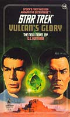
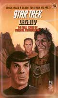
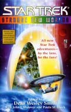
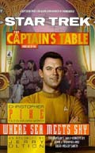
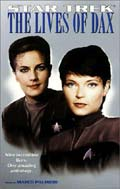
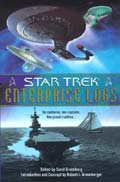
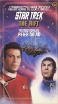

"Early Voyages" sem dvida
foi a mais importante obra de desenvolvimento do histrico da
primeira misso de cinco anos do capito Christopher Pike a
bordo da Enterprise (segundo consta, houve duas, antes que Kirk
assumisse o comando da nave). Apesar disso, muitas outras
tentativas, sobretudo nos livros, exploraram mais os tempos e
personagens apresentados no piloto "The Cage".
Infelizmente, os fs mais atentos j
descobriram que impossvel conciliar todo o material produzido
sobre o universo de Jornada nas Estrelas, mesmo quando
falamos de romances publicados pela editora oficial da marca, a
Pocket Books. Ciente disso, a Paramount desconsidera tanto os
quadrinhos quanto os livros para efeito de "cronologia
oficial".
Por conta dessa iniciativa, os prprios
autores de material ligado ao chamado "universo
expandido" (livros, quadrinhos e games) se esforam
principalmente em manter a coerncia com os episdios e filmes,
geralmente descartando outras fontes literrias ou interativas
como referncia.
Em "Early Voyages", por
exemplo, nada foi aproveitado (ou sequer consultado) das
referncias anteriores misso de Pike feitas nos livros, o
que obviamente produz contradies. Por isso, deve ficar a
critrio de cada f decidir o que quer ou no considerar parte
"oficial" do universo de Jornada.
De uma forma ou de outra, h muita coisa
interessante para se ler sobre Christopher Pike nos livros de Jornada.
Segue a uma breve compilao dos principais livros ligados
histria pregressa da Enterprise (NCC-1701).
Livros:

Vulcan's
Glory (1989)
D.C. Fontana
Escrito por uma das roteiristas da srie original, o livro
apresenta a primeira misso de Spock a bordo da Enterprise, sob o
comando de Pike e da Nmero Um. No desenrolar da trama,
Montgomery Scott tambm passa a integrar a tripulao da nave.
Concentrado no personagem Vulcano, ele lida com a necessidade de
Spock em conciliar suas vrias obrigaes para com seu mundo
natal e a Frota Estelar.

Legacy
(1991)
Michael Jan Friedman
Uma pesquisa de rotina do planeta Alfa Octavius 4 se torna
desastrosa quando Spock atacado e envenenado por uma enorme
criatura, e o grupo de descida de Kirk imobilizado por um
violento terremoto. Enquanto Spock luta por sua vida na
enfermaria, Scotty organiza uma busca por Kirk e seus homens.
Apesar disso, os esforos de resagte precisam ser interrompidos
quando a Enterprise chamada ao sistema Beta Cabrini, on
de
uma colnia de minerao se encontra sob pesado ataque. L, a
Enterprise enfrenta um saqueador de nome Dreen -- um homem que
Spock testemunhou ser derrotado por seu ex-capito, Pike, anos
antes. Lutando contra os efeitos do veneno, Spock reassume o
comando da nave. Logo, ele e Dreen so colocados num jogo mortal
de gato e rato, e s um pode sobreviver.
Strange New Worlds (1998)
Conto: A Private Anecdote
Landon Cary Dalton
Preso em seu corpo debilitado na Base Estelar 11, Pike reflete
sobre a estreita linha entre a iluso e a realidade.
Captain's Table #6: Where Sea Meets Sky
(1998)
Jerry Oltion
Christopher Pike tem o pblico na palma da mo em um bar onde os
capites da Frota Estelar costumam contar suas aventuras
espaciais. No caso de Pike, a histria envolve um intrigante
episdio com "baleias espaciais".
The Lives of Dax (1999)
Captulo: Audrid: Sins of the Mother
S.D. Perry
Christopher Pike encontra muito mais do que queria quando,
acompanhado por dois cientistas Trills, ele lidera uma misso
para explorar um estranho cometa.
Enterprise Logs (2000)
Conto: Conflicting Natures
Jerry Oltion
Pike recebe a bordo um aliengena cujas habilidades empticas
aumentam a tenso entre uma tripulao j estressada por um
ataque Klingon.
The Rift (2001)
Peter David
A cada 35 anos, uma fenda no espao conecta a Federao a uma
misteriosa raa chamada Calligar, que vive num planeta a centenas
de anos-luz de distncia -- muito longe para viajar numa nave
estelar. 
Kirk e
a Enterprise so despachados para transportar uma delegao de
diplomatas, estudiosos e cientistas da Federao que viajaro a
Calligar durante o breve perodo em que a fenda vai se abrir.